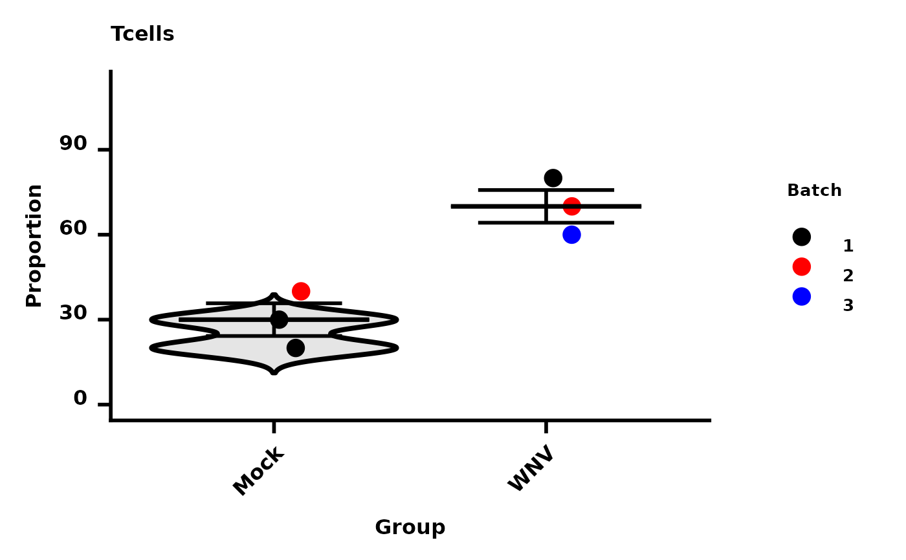

This function allows you to generate quantitative plots of your data. Creates scatter plots. If interested in generating other plots (bar graphs) or adding statistics, we recommend reading more on using 'ggplot2' (for more info https://ggplot2.tidyverse.org/). Uses the package 'ggplot2' to generate plots, 'data.table' to manipulate data.
Usage
make.autograph(dat, x.axis, y.axis, colour.by, colours,
y.axis.label, grp.order, title, filename, scale, dot.size, width,
height, path)Arguments
- dat
NO DEFAULT. data.frame.
- x.axis
NO DEFAULT. Character or numeric. Selects column that will specify x-axis.
- y.axis
NO DEFAULT. Character or numeric. Selects column that will specify y-axis.
- colour.by
DEFAULT = x.axis. Character, column name. Selects column that will determine differentiator of colour in plots.
- y.axis.label
NO DEFAULT. Character. Specify y-axis label. Can be "" if one is not desired.
- grp.order
DEFAULT = NULL. String of characters or numbers. Specify order of group for x-axis.
- colours
DEFAULT = NULL. String of characters. Will determine the colours that will differentiate between colours specified by 'colour.by'.
- my_comparisons
DEFAULT = NULL. A list containing vectors – each a pair of groups for comparison.
- Variance_test
DEFAULT = NULL. Can be 'wilcox.test' (non-parametric) or 't.test' (parametric)
- Pairwise_test
DEFAULT = NULL. Can be 'kruskal.test' (non-parametric) or 'anova' (parametric)
- title
DEFAULT = paste0(y.axis.label, " - ", y.axis). Character. Specify title of plot on graph. Default combines 'y.axis.label' and 'y.axis'.
- subtitle
DEFAULT = NULL. Plot subtitle.
- filename
DEFAULT = paste0(y.axis.label, " - ", y.axis, ".pdf"). Character. Specify name plot will be exported as. Default combines 'y.axis.label' and 'y.axis'. Make sure to end with ".pdf" so file is correctly saved.
- violin
DEFAULT = TRUE. Add violin plot underneath the data points.
- scale
DEFAULT = "lin". Character. Select y-axis scale. Can also be "sci".
- dot.size
DEFAULT = 5. Numeric. Specify size of dots on plot.
- width
DEFAULT = 5. Numeric. Specify width of plot.
- height
DEFAULT = 5. Numeric. Specify height of plot.
- max.y
DEFAULT = 1.4. Multiplier for plot heigh – allowing room for stats.
- path
DEFAULT = getwd(). The location to save plots. By default, will save to current working directory. Can be overidden.
Author
Thomas M Ashhurst, thomas.ashhurst@sydney.edu.au Felix Marsh-Wakefield, felix.marsh-wakefield@sydney.edu.au
Examples
dat <- data.frame(Samples = c("Mock_01", "Mock_02", "Mock_03", "WNV_01", "WNV_02", "WNV_03"),
Group = c(rep("Mock", 3), rep("WNV", 3)),
Tcells = c(20, 40, 30, 60, 70, 80),
Bcells = c(90, 95, 70, 20, 15, 30),
Batch = c(1,2,1,3,2,1)
)
Spectre::make.autograph(dat = dat,
x.axis = "Group",
y.axis = "Tcells",
colour.by = "Batch",
colours = c("Black", "Red", "Blue"),
y.axis.label = "Proportion"
)
#> Loading required package: ggpubr
#> AutoGraph for `Proportion - Tcells` started
#> AutoGraph - setup started
#> AutoGraph - setup complete
#> AutoGraph - plotting started
#> AutoGraph - adding violin plot
#> Warning: Using `size` aesthetic for lines was deprecated in ggplot2 3.4.0.
#> ℹ Please use `linewidth` instead.
#> ℹ The deprecated feature was likely used in the Spectre package.
#> Please report the issue at
#> <https://github.com/ImmuneDynamics/Spectre/issues>.
#> Warning: The `size` argument of `element_line()` is deprecated as of ggplot2 3.4.0.
#> ℹ Please use the `linewidth` argument instead.
#> ℹ The deprecated feature was likely used in the Spectre package.
#> Please report the issue at
#> <https://github.com/ImmuneDynamics/Spectre/issues>.
#> Warning: Groups with fewer than two datapoints have been dropped.
#> ℹ Set `drop = FALSE` to consider such groups for position adjustment purposes.
#> Warning: Groups with fewer than two datapoints have been dropped.
#> ℹ Set `drop = FALSE` to consider such groups for position adjustment purposes.
#> Warning: Groups with fewer than two datapoints have been dropped.
#> ℹ Set `drop = FALSE` to consider such groups for position adjustment purposes.
#> Warning: Groups with fewer than two datapoints have been dropped.
#> ℹ Set `drop = FALSE` to consider such groups for position adjustment purposes.
#> AutoGraph for `Proportion - Tcells` saved to disk
#> Warning: Groups with fewer than two datapoints have been dropped.
#> ℹ Set `drop = FALSE` to consider such groups for position adjustment purposes.
#> Warning: Groups with fewer than two datapoints have been dropped.
#> ℹ Set `drop = FALSE` to consider such groups for position adjustment purposes.
#> Warning: Groups with fewer than two datapoints have been dropped.
#> ℹ Set `drop = FALSE` to consider such groups for position adjustment purposes.
#> Warning: Groups with fewer than two datapoints have been dropped.
#> ℹ Set `drop = FALSE` to consider such groups for position adjustment purposes.
